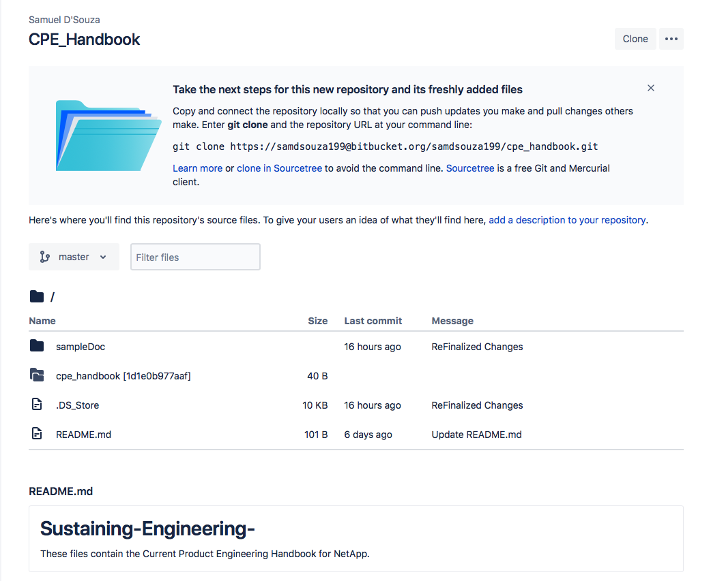

How to Edit this Document¶
This document is written in reStructuredText format. The content is stored at: https://github.com/samdsouza/Sustaining-Engineering-
In order to add to / edit this document, clone the repository to your local machine
A good place to reference in setting up this document is: https://docs.readthedocs.io/en/stable/intro/getting-started-with-sphinx.html
Detailed Steps for Installation¶
In order to edit this document, make sure python is installed on your machine,
Begin by entering the directory you downloaded, ‘Sustaining-Engineering-‘
You will then need to install sphinx:
$ pip install sphinx
Enter the 'sampleDoc' directory,
$ sphinx-quickstart
Quickstart will begin to walk you through the defaults, in most cases you can just accept the defaults but a thorough explanation of these defaults is found on: https://www.youtube.com/watch?v=oJsUvBQyHBs
After creating this document, you can now freely edit and add to the handbook.
To preview the website / your changes:
Enter the 'sampleDoc' directory
$ make html
Sphinx will then build the html file with the given changes that have been added, and to view this file,
$ open build/html/index.html
You can now view this website in your web browser.
In order to add new pages / edit pages:
Enter the source directory
Utilize a virtual machine and edit this documents in the terminal
$ vim index.rst // vim Monitoring\ Escalations.rst
You must then press "i" in order to begin to make changes to this document
Once the changes have been finalized, press "esc" and :wq to save these changes / :q! to discard these changes
You can now rebuild your html file to view these changes in your web browser.
Good documentation to follow to make changes is shown here: http://openalea.gforge.inria.fr/doc/openalea/doc/_build/html/source/sphinx/rest_syntax.html#colored-boxes-note-seealso-todo-and-warnings
In order to push these changes to ‘Read The Docs’ and finalize your changes, make sure that your updates have been repushed to github, and login to readthedocs.org